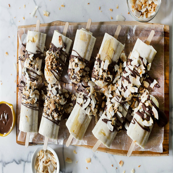

Mùa Hè nóng nực, chỉ có ăn kem mát lạnh là ngon! Với một vài nguyên liệu tuyệt vời: Dừa nướng, chuối chín, hạt chia và một chút chocolate đen, bạn đã có thể làm ra những chiếc kem que siêu ngon và siêu mát để giải nhiệt ngày Hè.
Nguyên liệu: (cho 10 – 12 que kem, tùy vào kích thước khuôn)
- 400ml nước cốt dừa (đầy đủ chất béo, không đường)
- ½ bát nước
- 1 thìa canh hạt chia
- 4 quả chuối chín
- ½ thìa cà phê vani
- 1 thìa canh đường nâu (tùy thích, nếu muốn kem ngọt thì cho thêm đường. Thật ra, chuối và chocolate đã ngọt rồi).
- ¼ bát chocolate chip đen
- 1 thìa cà phê dầu olive
-¼ cốc dừa đã bào nướng (không cho thêm đường)
Cách làm kem chuối dừa:
- Trong một tô, trộn nước cốt dừa, nước và hạt chia. Để khoảng 15 – 20 phút cho hạt chia nở ra. Sau 20 phút, hạt chia sẽ nở ra, làm cho hỗn hợp dẻo lại.
- 2 quả chuối đem bóc vỏ, cho vào máy xay sinh tố, thêm vani, đường nâu (nếu dùng), và hỗn hợp hạt chia vừa ngâm. Bật máy xay vài giây cho đến khi hỗn hợp quánh mịn.
- 2 quả chuối còn lại bóc vỏ, thái lát ra rồi cho khuôn kem, đổ hỗn hợp chuối vừa xay vào.
- Để khuôn kem chuối trong ngăn đá tủ lạnh, để qua đêm.
- Chuẩn bị lớp phủ bên ngoài: Cho dừa vụn lên chảo, đun với lửa vừa, đảo đều tay cho đến khi dừa chuyển sang màu vàng nâu.
- Tiếp theo, cho chocolate chip và dầu olive vào 1 cái bát, cho vào lò vi sóng, quay 30 giây cho chocolate tan chảy ra. Bạn cũng có thể làm tan nó trong một nồi hơi đặt trên bếp nếu không có hoặc không muốn dùng lò vi sóng.
- Lấy que kem từ khuôn ra. Để lấy được kem ra khỏi khuôn, bạn cho rã đông một chút sẽ lấy được kem dễ hơn. Đặt kem trên một cái thớt/hoặc đĩa có lót giấy nến để kem không bị dính.
- Rưới chocolate tan chảy và rắc dừa nướng lên phần đầu của que kem. Sau đó, cho kem vào tủ lạnh khoảng 10 – 15 phút cho chocolate cứng lại.
Kem chuối làm cách này rất đơn giản, dễ làm, ngon và rất lạ phải không? Đặt kem lên khay có để sẵn những viên đá nhỏ cho kem luôn lạnh và thưởng thức!